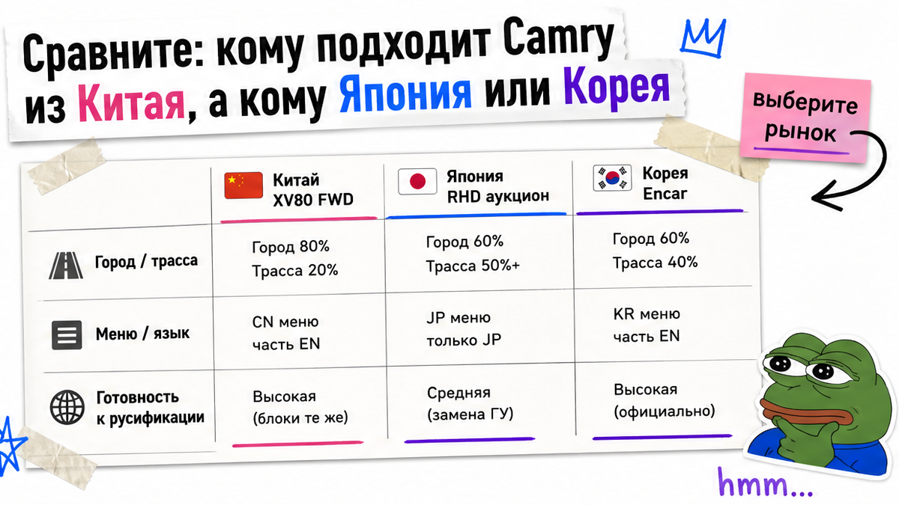
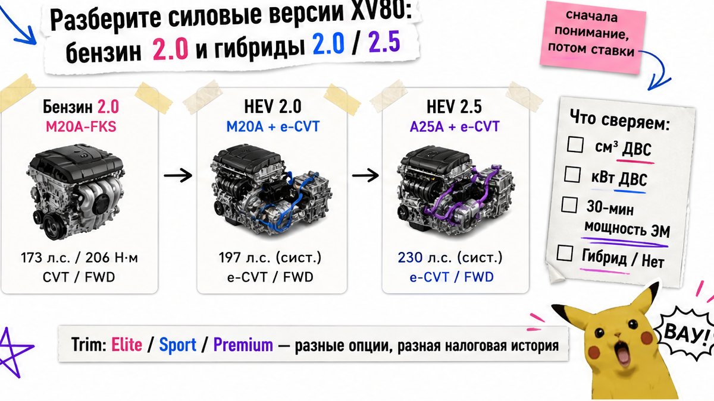
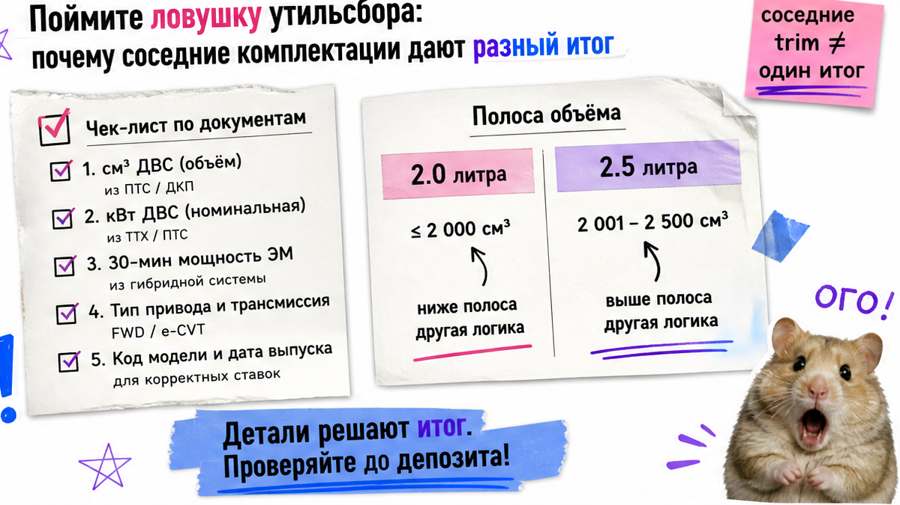

Антон уже тянется к депозиту за Sport Plus гибрид 2.5 из Китая: в чате написали "почти как соседний 2.0, только богаче". Через час выясняется другое: объём мотора в другой полосе, меню на иероглифах, а "180 дней" он перепутал с льготой утильсбора. Стоп до сверки. Сверьте две соседние комплектации Camry XV80 на бумаге и соберите пакет VIN с документами – потом решайте: платите, ждёте уточнений или отказываетесь.
Инсайт до депозита: Китайская Toyota Camry XV80 – это China Market от GAC Toyota: только передний привод и три силовые линии (бензин 2.0, гибрид 2.0, гибрид 2.5). Названия Elite / Sport / Premium не равны одной цене "под ключ". Утильсбор смотрите по документам на VIN, без самодельного калькулятора. Правило 180 дней – про экспорт из КНР, а не про льготу в РФ.
Мы в Авто-Сейлс во Владивостоке ведём заказы из Китая и видим одну картину: объявление "максималка почти даром", а в смете соседние версии расходятся уже на моторе. Сначала сверьте две версии на бумаге, потом деньги – так выбирают тойота камри из китая без депозита вслепую.

Китайская Camry XV80 подходит, если нужен свежий седан для города и трассы, комфорт "большой Камри" и вы готовы принять China Market как есть: китайское меню, свои коды комплектаций, оформление через Владивосток. Это не "просто Камри из рекламы" – поколение XV80, сборка GAC Toyota (совместное предприятие в Наньша, Гуанчжоу), без полного привода.
Если важнее правый руль с аукционом или корейская история через Encar – спокойнее Япония или Корея. Типичная ошибка: выбрать "Камри" по фото салона и уже перевести депозит, не назвав мотор и рынок.
Делать: зафиксируйте задачу (город/трасса, бензин или гибрид, готовность к русификации) до поиска лота. Не делать: путать китайскую XV80 с японской или американской Camry и с прошлым поколением XV70.

На пальцах XV80 – это код поколения кузова. Параллельный гибрид – мотор и электромотор крутят колёса вместе, а не "сначала только батарея, потом бензин". В открытых каталогах China Market на 2026 держат три линии: бензин 2.0 + вариатор, гибрид 2.0 и гибрид 2.5. Рестайл августа 2026 добавил большой экран 15,6" и приборку 8,8", техника силовой линейки прежняя.
Например, в каталогах Drom и Auto.ru фигурируют Elite, Luxury, Sport Lite / Sport / Sport Plus, Premium, Flagship (и близкие Deluxe / Ultimate). Картинка похожа – итог "под ключ" разный.
| Параметр | Бензин 2.0 (M20C) | HEV 2.0 (M20F) | HEV 2.5 (A25D) |
|---|---|---|---|
| Объём (ориентир) | ~1987 см3 | ~1987 см3 | ~2487 см3 |
| Мощность ДВС (ориентир по 公告) | ~127 кВт | ~112 кВт | ~136 кВт |
| Привод | передний | передний | передний |
| На что смотреть в trim | экран, люк, помощь водителю | схема гибрида + оснащение | та же схема + полоса объёма 2.5 |
| Риск "соседних" цен | выше порога по кВт ДВС | льгота только по документам VIN | ДВС уже выше порога + другая полоса объёма |
Вердикт по моторам: сравнивайте две конкретные строки (например Sport Plus 2.0 HEV и Premium / Flagship 2.5 HEV) по см3, кВт из бумаг и списку оснащения. Цифры выше – ориентир; финал только из ОТТС / СБКТС / ЭПТС на ваш VIN.
Делать: выпишите мотор и заводской код версии рядом с названием Elite / Sport / Premium. Не делать: считать "гибрид" автоматической скидкой на растаможку.

На практике бензин 2.0, гибрид 2.0 и гибрид 2.5 выглядят как "одна Камри", но льготный утильсбор "для физлица" у типичных версий ждать нельзя. Бензин уже выше порога по киловаттам ДВС. У 2.5 гибрида ДВС тоже выше порога. У 2.0 гибрида к мощности ДВС добавляют 30-минутную мощность электромотора из документов – не "системные лошади" из рекламы.
Простыми словами: 30-минутная мощность – это показатель электромотора из официальных бумаг, а не красивая цифра с баннера. По методике для параллельных (не последовательных) гибридов берут ДВС плюс эту величину. Плюс ~1987 см3 и ~2487 см3 попадают в разные полосы объёма – соседние комплектации дают разный итог даже при похожей картинке.
Готовые суммы пошлин и утильсбора здесь не публикуем. Закажите расчёт в каталоге avto-sales125.ru по конкретному VIN.
Делать: проверьте см3 и кВт в документах, затем запросите смету состава цены. Не делать: переносить чужие таблицы рублей из обзоров под "ваш" лот.
Тут важный момент, на котором ломается половина переписок. Правило 180 дней с 01.01.2026 – китайское экспортное условие: машина должна быть учтена в КНР нужный срок до вывоза; при меньшем сроке обычно нужно разрешение производителя. Это не льгота утильсбора в России.
12 месяцев владения – уже российская логика льготного утильсбора для физлица после ввоза (плюс мощность, объём и остальные условия). Путать эти нормы – прямой риск депозита "не в ту сторону".
| Норма | Где действует | Что спросить у поставщика |
|---|---|---|
| 180 дней | Китай, учёт до экспорта | дата первой регистрации / учёта в КНР; есть ли письмо завода при коротком сроке |
| 12 месяцев | РФ, условие льготы утильсбора | план владения и полный пакет условий физлица – отдельно от экспорта |
| Связка с Camry | оба слоя до депозита | сначала даты и VIN, потом разговор про льготу |
Делать: задайте поставщику прямой вопрос про дату учёта в КНР. Не делать: писать в чат "у вас же 180 дней льготы" – это разные вещи.
Депозит – уже деньги в чужой стороне сделки. На практике надёжный канал отдаёт пакет до выкупа. Если слышите "сначала перевод, потом разберёмся с комплектацией" – это другой риск.
Схема до денег:
Задача и мотор → Две комплектации в таблице → VIN + фото таблички → 180 дней / письмо завода → Смета по VIN → Договор и СВХ Владивосток → Решение: плачу / жду / отказываюсь
Делать: используйте чеклист выше как стоп-лист. Не делать: оплачивать "бронь" без VIN и без зафиксированной версии в договоре.
Хаб Авто-Сейлс – Владивосток: логистика, таможня, СВХ и выдача (офис: Днепровская 40а, строение 4). Форм на странице блога нет – подбор и расчёты живут в каталоге и переписке.
Критерий результата на сегодня: заполненный чек-лист до депозита на один VIN. Вы сможете сравнить две комплектации, назвать мотор и поколение, понять 180 дней vs льготу и не перевести деньги вслепую. Детали по конкретному лоту – в Telegram avtosales125 .
Нужен подбор под ключ – откройте каталог до перевода. Отзывы – на 2GIS Авто-Сейлс.
Материал проверен: Редакция Авто-Сейлс (эксперты по авто под заказ из Японии, Кореи и Китая).
Достоверность: факты сверены с каталогами Drom/Auto.ru по China Market XV80, публикациями КОЛЕСА.ру и Авторевю (рестайл 2026), логикой утильсбора по ПП РФ № 1713 / перечню к № 1291 и разводкой 180 дней vs 12 месяцев из отраслевых разборов; актуальные расчёты – только в каталоге по VIN.
China Market XV80 – GAC Toyota, левый руль, только передний привод, свои trim-ы Elite…Flagship и часто китайское меню. Японская Camry – другой рынок, другие коды и логика подбора. Сделайте сверку по рынку и VIN, не по слову "Camry" в заголовке.
Берите 2.5 HEV, если нужен запас тяги и вы сознательно принимаете другую полосу объёма (~2.5 л) и иную логику утильсбора. Сравните счёт по VIN с соседним 2.0 HEV до депозита – картинка салона тут не поможет.
Часто да: штатное меню China Market без русского. Заложите русификацию или CarPlay как отдельный шаг после выдачи. Не делайте вид, что "уже на русском", пока это не подтверждено видео с конкретного авто.
Выпишите мотор (см3/кВт), код версии, экран/люк/аудио и риски полосы утильсбора. Затем запросите смету состава цены по VIN. Без этой таблицы депозит – лотерея.
Проверьте фото таблички, совпадение VIN в договоре и инвойсе, дату выпуска, мощность и объём из документов, подтверждение 180 дней учёта в КНР. Нет пакета – нет перевода.
Нет. Избегайте самодельных калькуляторов и чужих сумм. Ориентир – документы на ваш VIN и расчёт в каталоге Авто-Сейлс; в статье оставляем только логику сравнения.